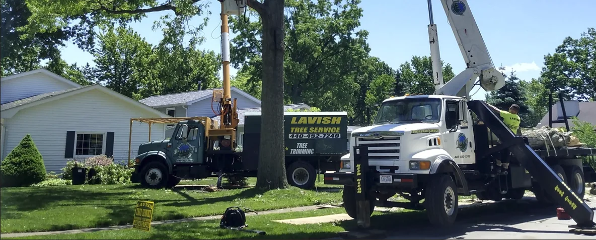

Tree trimming
Room to grow. Room to breathe.
Thoughtful pruning and shaping for healthier growth, a better-looking canopy, and more clearance around your property.
Tree care for the place you call home. From a healthier canopy to a clear yard, Lavish brings the right crew and equipment to your corner of Lorain County.
Some trees need a trim. Some need to come down. We help you take care of both—with a clear focus on your trees and the property around them.

Your trees.
Our kind of work.
Room to grow. Room to breathe.
Thoughtful pruning and shaping for healthier growth, a better-looking canopy, and more clearance around your property.
A careful approach to big decisions.
Removal of unwanted or hazardous trees, with the equipment and attention your property deserves.
A fresh start for your yard.
Clear the stump left behind and reclaim usable space for your landscape.
Help when it cannot wait.
24-hour emergency tree removal and storm response for fallen trees, damaged limbs, and the unexpected.
From stump grinding to large-limb removal, take a look at Lavish on the job.
Watch our crew on YouTubeOriginal project photos from Lavish Tree Service.

Fallen trees. Dangerous limbs. Storm damage. Call Lavish for emergency tree removal and storm response, day or night.
Call 440-452-7240Keep clear of damaged trees and downed lines. If there is immediate danger, call emergency services first.
Lavish Tree Service cares for residential and commercial properties throughout Lorain County and the surrounding area.
Whether it’s a tree over your roof, a stump in the lawn, or a yard that needs a little breathing room, tell us what you have in mind. We’ll talk through the next step.
Let’s talk about your propertyTell us a little about your property and the work you need. For storm damage or an urgent tree concern, please call instead.
Call Lavish440-452-7240Design preview. This form does not send requests yet. Please call to reach Lavish.